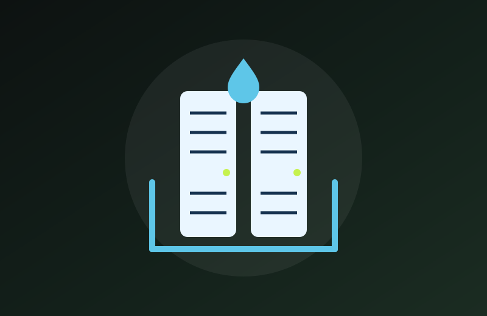
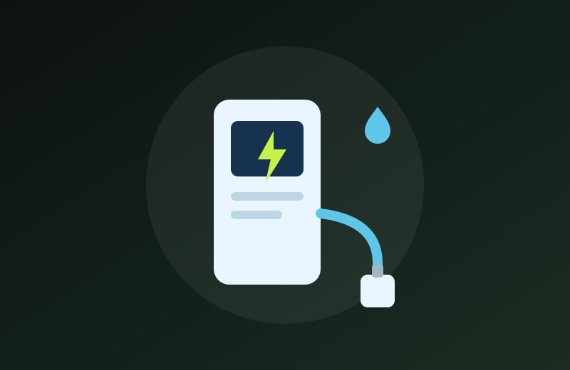
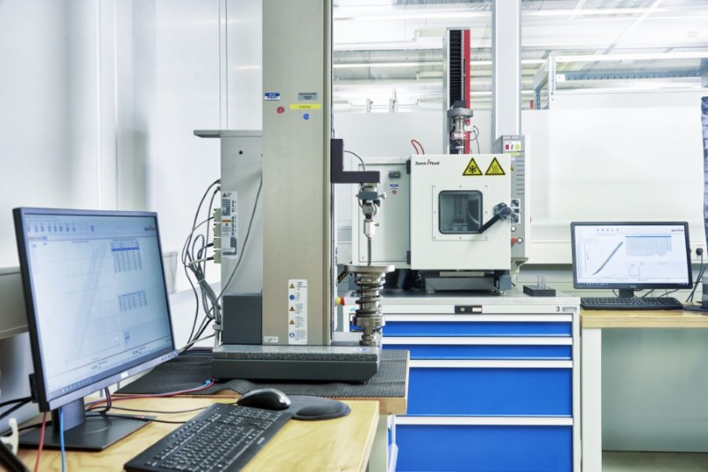

液冷冷却液健康监测
读懂每一滴冷却液
液冷数据中心冷却液健康监测专家 —— 从感知，到预测，到守护
MEMS 多参数在线监测
AI 数字孪生预测
提前 7-30 天预警
液冷数据中心冷却液健康监测专家 —— 从感知，到预测，到守护
面向现场的手持检测设备，15分钟完成 pH、电导率/电阻率、浊度、铜离子和 ISO 4406 清洁度等全参数检测，自动生成冷却液健康评分与异常原因建议，为交付验收、巡检和应急抢修建立统一的现场检测标准与数据入口。
了解更多微型化、低功耗、可阵列化的 MEMS 多参数传感器，可嵌入 CDU、支路、冷板前后等关键节点，融合电导率/电阻率、pH、温度、浊度等指标。点位密度带来数据质量，数据质量带来预测能力，让冷却液监测成为系统的"神经末梢"。
了解更多实时采集多源监测数据，构建冷却液系统数字孪生模型，通过 AI 趋势与异常识别提前 7-30 天预警指标越界、定位污染来源，并自动输出过滤、冲洗、补液、换液等预防性维护工单，把"事后维修"升级为"事前预测"。
了解更多面向数据中心高可用场景的现场液冷急救解决方案，集成泄漏收集与废液封存、不停机过滤/净化/补液、便携检测与 AI 辅助决策、远程专家连线于一体，配合年度维保包与按次应急服务，补齐预警到抢修之间的响应空白。
了解更多基于油液监测与可靠性验证的技术积累，我们同时提供以下能力
识别汽车 VIN 码给出品牌配置，结合故障图片识别、内窥镜、OBD 故障码与油品在线监测数据，定位故障原因，提供专业维修与定制养护建议。
调配 0-100μm 污染颗粒物，用于变速箱、驱动电机等液压系统及阀、泵、过滤零部件的抗污染可靠性验证，达到 ISO 4406 清洁度要求，可替代进口污染物模拟油液长期使用状态。

冷板与浸没式液冷规模化部署后，实时监控冷却液电导率、pH、铜离子和清洁度等指标，预防铜腐蚀、结垢和微粒堵塞引发的局部过热宕机，保障 SLA 与算力连续性。
动力电池冷却液电导率要求低于 5μS/cm，超标即可能引发电气短路；大型储能电站冷却液监测几乎缺失，铜腐蚀与微生物污染可能诱发热失控连锁故障，需要在线预警。
人形机器人高频运动的液冷管路与密封件易老化，产生的铁锈颗粒污染会降低流量、影响散热，导致伺服电机过热停机，需要微型化在线监测保障关节与驱动系统可靠运行。

大功率液冷超充枪线依赖冷却液维持散热与电气安全，实时监测电导率、温度与清洁度，可预防冷却液劣化导致的过热降功率与安全风险，保障快充体验与设备寿命。

比兑智能科技（上海）有限公司致力于为设备提供智能化的流体监控解决方案。我们以便携检测、MEMS 在线传感、数字孪生与 AI 预测为核心，聚焦液冷数据中心冷却液健康监测，并将多年油液监测与可靠性验证的技术积累延伸至新能源汽车、储能与工业设备等领域。
用硬件切入、用平台和服务沉淀长期价值，把冷却液从"被动耗材"升级为"可监测、可预测、可服务"的关键基础设施资产，为客户创造更大的价值。
+86 135-2430-9462
infor@bidui-ite.com
上海市浦东新区拱秀路1026弄